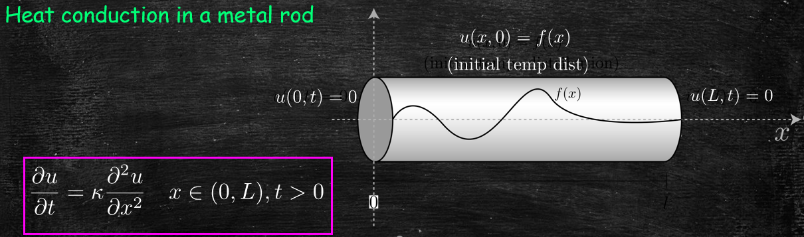

Advanced Calculus
Lecture 7
Jonathan Crofts
Nottingham Trent University
Advanced Calculus L7
- The 1D heat equation
- The method of separation of variables
- Examples
The 1d Heat Equation
Plus BCs: ends of rod held constant at zero degrees, i.e.
\[
u(0,t) = u(L,t) = 0
\]
And IC giving the initial temperature distribution: $u(x,0)=f(x)$
Advanced Calculus L7
- The 1D heat equation
- The method of separation of variables
- Examples
Method of Separation of Variables
The trick is to assume that your solution takes the separable form
\[ \color{#00FF00}{\boxed{\color{white}{ u(x,t) = F(x)G(t) }}} \]Substituting this into the PDE gives
\[ \begin{align*} \frac{\partial u}{\partial t} &= F(x)G'(t) \\ \frac{\partial^2 u}{\partial x^2} &= F(x)''G(t) \end{align*}\implies F(x)G'(t) = \kappa F''(x)G(t) \]Now
\[ F(x)G'(t) = \kappa F''(x)G(t) \implies \begin{align*} \frac{G'(t)}{\kappa G(t)} &=\frac{F''(x)}{F(x)}\\ &= \lambda ~\text{ a constant} \end{align*} \]This follows since the LHS is a function of $t$ only and the RHS a function of $x$ only.
Multiplying by the denominators and rearranging gives
\[ \color{red}{\boxed{\color{white}{ \begin{cases} F''-\lambda F = 0 & F(0)=F(L)=0\\ G'-\kappa\lambda G = 0& \end{cases} }}} \]Where do the new BCs come from?
It follows that in order to solve for $u(x,t)$ we need to solve the ODEs for $F$ and $G$.
Let's start with the $F$-equation:
\[ F''-\lambda F = 0\quad F(0)=F(L)=0 \]This is a BVP and we have seen previously that we require $\lambda=-\omega^2<0$ to obtain non-trivial solutions, i.e.
\[ F'' +\omega^2 F=0, \]which has solution
\[ F(x) = A\cos(\omega x)+B\sin(\omega x) \]
Applying the BCs
\[ F(0) = A\cos(\omega 0)+B\sin(\omega 0) = 0 \implies A=0 \]So that $F(x) = B\sin(\omega x)$
The second BC gives
\[ F(L) = B\sin(\omega L)=0 \implies \omega L = n\pi, n=1,2,3,\ldots \]Or
\[ \omega_n = \frac{n\pi}{L}, n=1,2,\ldots \implies \color{#00FF00}{\boxed{\color{white}{F_n(x) = B_n\sin\left(\frac{n\pi}{L} x\right)}}} \]Now for the $G$-equation
\[ G'-\kappa\lambda G = 0 \quad\text{or}\quad \color{#00FF00}{\boxed{\color{white}{ G'+\kappa\frac{n^2\pi^2}{L^2}G=0}}} \]since
\[ \lambda = -\omega^2=-\frac{n^2\pi^2}{L^2} \]We can solve to obtain
\[ \color{red}{\boxed{\color{white}{ G_n(t) = C_ne^{-\kappa\frac{n^2\pi^2}{L^2}t} }}} \]Putting this altogether we get...
... a family of solutions
\[ u_n(x,t) = D_ne^{-\kappa\frac{n^2\pi^2}{L^2}t}\sin\left(\frac{n\pi}{L}x\right) \quad(D_n = B_nC_n) \]Now, since the PDE is linear and homogeneous we can sum these solutions to obtain a general solution, i.e.
\[ \color{#00FF00}{\boxed{\color{white}{ \begin{align*} u(x,t) &=\sum_{n=1}^\infty u_n(x,t)\\ &=\sum_{n=1}^\infty D_ne^{-\kappa\frac{n^2\pi^2}{L^2}t}\sin\left(\frac{n\pi}{L}x\right) \end{align*} }}} \]We shall see how to incorporate the IC in the example to follow
Advanced Calculus L7
- The 1D heat equation
- The method of separation of variables
- Examples
Example 7.1
Find the solution to the IBVP
\[ \frac{\partial u}{\partial t} = 4\frac{\partial^2u}{\partial x^2}, \quad x\in(0,\pi), ~ t>0 \]with BCs \[u(0,t)=u(\pi,t)=0\] and IC
\[ u(x,0) = \sin(x)+\frac{1}{2}\sin(2x)=f(x), x\in(0,\pi) \]Solution
Assuming a separable solution $u(x,t) = F(x) G(t)$ we can derive a pair of ODEs for $F,G$:
\[ \begin{cases} F''-\lambda F = 0 & F(0)=F(\pi)=0\\ G'-4\lambda G = 0& \end{cases} \]Also, since we have zero BCs we know that the $F$-equation should admit oscillatory solutions implying that
\[ \lambda = -\omega^2<0 \]$F$-equation: We can solve
\[F''+\omega^2 F=0\]to obtain
\[ F(x) = A\cos(\omega x)+B\sin(\omega x) \]Incorporating the BCs gives
\[ F(0) = A = 0 ~~\text{and}~~ F(\pi) = B\sin(\omega\pi) = 0 \]The second equation implies that $\omega\pi=n\pi$ or that $\omega=n$ giving
\[ F_n(x) = B_n\sin(nx), \quad n=1,2,\ldots \]$G$-equation: Since $\lambda = -\omega^2 = -n^2$ this equation becomes
\[ G' +4n^2 G = 0 \]This is a first-order separable ODE with solution
\[ G(t) = C_ne^{-4n^2t},\quad n=1,2,\ldots \]Putting this altogether gives
\[ u_n(x,t) = D_ne^{-4n^2t}\sin(nx), \quad n=1,2,\ldots \]Since our PDE is linear and homogeneous we sum to get
\[ u(x,t) = \sum_{n=1}^\infty D_ne^{-4n^2t}\sin(nx) \]To determine the coefficients $D_n$ we incorporate the IC:
\[ u(x,0) = \sum_{n=1}^\infty D_n\sin(nx) = \sin(x)+\frac{1}{2}\sin(2x) \]which implies that $D_1=1, D_2=1/2$ and $D_n=0$ otherwise.
Thus
\[ \color{red}{\boxed{\color{white}{ u(x,t) = e^{-4t}\sin(x)+\frac{1}{2}e^{-16t}\sin(2x) }}} \]A video showing how the temperature distribution changes in Example 7.1 after the heat source is removed
Lecture 7 Review
- In this lecture we covered
- the 1D heat equation
- the method of separation of variables
- After this lecture you should
- have knowledge of the 1D heat equation and in paticular its use in modelling real-world phenomena
- be able to solve the 1D heat equation for 'special' initial conditions using the technique of separation of variables